27 Chapter 27 — The Agent Harness for Sport Analytics
The role registry, the Teamwork loop, and how the book becomes a spec your agents can execute
27.1 The Harness Is a Contract, Not a Framework
This chapter is the book's reason to exist: a practitioner in a professional team needs an operating system for the AI stack — who does what, what they may touch, and what happens before anything reaches a coach. The harness is a role registry + a contract: eight roles, scoped tools, and the Teamwork loop that makes claims testable. Everything is measured (the harness lab ran the loop on the real artifact) or source-backed (the verified MCP/framework landscape).
Twenty-six chapters have built a perception-to-action pipeline: calibration, detection, tracking, pose, ball, event rows, statistics, expected value, tactical ML, simulation. Each piece works on its own footage. The failure mode arrives when you point a single general-purpose agent at the whole stack and ask it to "do the analysis." The book has that failure measured: in E07 a local VLM narrating raw pickleball frames hallucinated 4 of 6 claims (66.7%) because nothing grounded its language in an artifact. In E13 the same model, forced to argue against a critic and verify against a metrics.json, dropped to 0.0% hallucination. The delta between those two numbers is not a better model — it is a harness: a structured argument between agents with a verification gate in the middle.
The ladder dossier (the 4-Rung Sports Agentic Ladder, source-backed) names the stage most teams are stuck at: Rung 2, a sprawl of point tools — a ball tracker here, a tagging spreadsheet there, a GPS dashboard somewhere else — none of which share a coordinate system, a schema, or an evidence standard. A pickleball club at Rung 2 has a serve-speed video app, a manual scorecard, and a coach's notebook; an NRL analyst at Rung 2 has broadcast video, a Catapult GPS export, and a tagging tool whose events never reconcile to the same clock. The harness is the move to Rung 3: those point capabilities bundled into one closed-loop architecture where every claim carries its evidence and every handoff is contractual. What the harness deliberately is not: Rung 4, the generative match digital twin. Section 27.7c draws that boundary precisely.
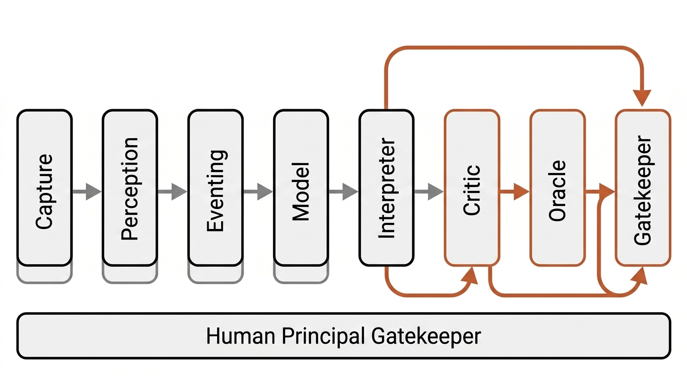
27.2 The Eight Roles
The registry derives from the book's four layers — evidence, representation, interpretation, action — plus three governance roles. Each role owns exactly one verb and a scoped tool list; a role that cannot touch the claims register cannot mint a claim. The orchestrator is not a ninth role with its own verb: it is the scheduler that reads the recipe registry, assigns roles to agents, and enforces the loop. Keeping the orchestrator brainless is a design decision — the intelligence lives in the roles and the contract, not in a monolithic controller that would itself need a critic.
| Role | Verb | Tools | Duty |
|---|---|---|---|
| Capture | watching | video, tracking | Ingest, extract + hash frames, clip manifest (C05) |
| Perception | watching | vision, tracking, video | Detect, track, pose, ball (C06-C16) |
| Eventing | tagging | tracking, data, vision | Coordinates to PBN/NRLSheet rows (C17-C19) |
| Model | modelling | data, code, vision | Ratings, value, tactical ML, simulation (C21-C24) |
| Interpreter | interpreting | data, vlm, report | Numbers to narrative, scouting (C26) |
| Critic | interpreting | claims, data, code | Falsify claims against artifacts (the E13 pattern) |
| Oracle | acting | data, vlm, report | Domain expertise: rules, coaching knowledge |
| Gatekeeper | acting | claims, report | The human gate — always human (C31 discipline) |
The first four roles are the perception swarm the ladder dossier describes, and inside the Perception role the decomposition continues: a camera agent owns the ingest clock (fixed court-side GoPro on pb-003; broadcast PTZ on nrl-001), a detector agent runs per-frame inference (four players plus ball on the pickleball court; thirteen-a-side plus referees on the rugby pitch), a tracker agent owns identity persistence across occlusions (ByteTrack-style association on the 13.41×6.10 m court; ReID across broadcast cuts and pile-ups on the 100×68 m field), and an identity agent binds tracks to named athletes (bib, jersey number, or roster prior). The eventer converts those tracks to rows; the model and reporter convert rows to value and language. That is the full eight-role pipeline in the vocabulary a practitioner already uses.
The tool-scope rule is the safety mechanism, and it is worth stating as a failure mode. The E07 hallucination happened because a generative model had access to nothing but its own prompt and frames — no artifact to cite, no register to check. Under the registry, the interpreter can read data and render reports but cannot write claims directly; the critic can read claims and data but cannot run vision inference; the oracle reasons about already-structured evidence only. A pickleball interpreter that wants to say "Alice's third-shot drop rate is 42%" must route through the eventing artifact; an NRL interpreter claiming "their right edge leaks line-breaks" must cite the dog-leg rows, not the vibe of the highlight reel. Scoping turns fabrication from an accident into an impossibility of interface.
27.3 The Worked Loop: Run, Verify, Iterate (W6.3 Lab, Measured)
The agent loop is three moves repeated: run a recipe, verify the claim against the artifact, iterate on rejection. The harness lab implemented the loop and ran it on a real claim pair:
| Input claim | Critic audit | Gate verdict |
|---|---|---|
| "The annotation kappa is 0.400 (fair) on 6 frames" | Cites the artifact value; does not exceed it | APPROVED |
| "Labels are 100% accurate" | Exceeds what the artifact could show (kappa 0.400) | REJECT_OVERCLAIM |
The mechanism: the gate checks claims against artifact values, not against words. A claim that cites what the artifact contains (0.400) with a caveat (fair, n=6) is approved; a claim that exceeds it (100% on six frames) is rejected. This is the claims-register discipline (chapter 2, the C-01..C-24 register) running as a runtime check — and it is what separates this harness from a chatbot.
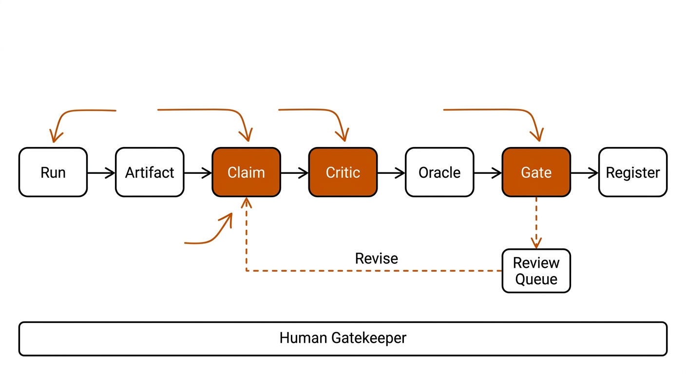
The critic's audit is a six-point rubric, hardened from E13: (1) does the cited artifact exist at the declared path; (2) does it contain the value the claim cites; (3) does the claim's language match the evidence tier ("on this footage" versus "in general"); (4) does the interval exist with an appropriate resampling unit (rally, set, match — never frame unless the claim is about frames); (5) does the claim exceed the artifact; (6) is the coaching language safe given the evidence layer. A single "no" routes the claim to revision. Iteration is bounded: a claim that fails twice lands in the human review queue rather than looping forever — the pickleball example being a VLM-generated "frame 120 shows a third-shot drop" that the eventing layer never confirmed; the rugby example a confident "that was a forward pass" that the tracking geometry cannot support at broadcast frame rate. Both are exactly the claims a chatbot would have shipped.
27.4 Tool Interfaces: The MCP Sport Server
Agents communicate through tools, not chat. Eight tool classes, delivered through an MCP server (the 2026 connective standard, source-backed: modelcontextprotocol.io): video, tracking, vision, data, vlm, code, claims, report. Each tool is a typed function with a schema; each role's tool list is the whitelist of what it may call. The communication contract is therefore an API contract: the eventing agent never "asks" the perception agent anything — it calls query_tracks(clip_id, frame_idx, class="person") and gets rows back, in MOT/kloppy format for the rugby lane and court-meter rows for the pickleball lane.
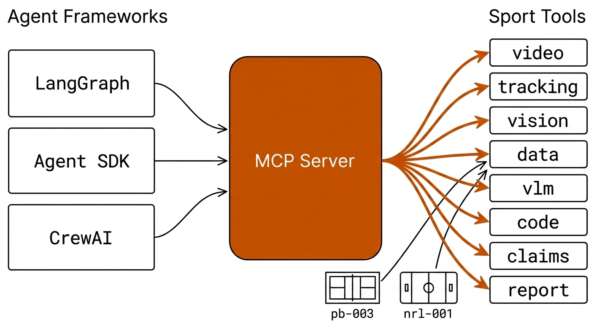
The verified gap: no mature MCP server exists for tracking data or calibrated court coordinates (source-backed, verified 2026-08). The C27 project is exactly that: a tracking-data MCP serving calibrated court coordinates — the schema-first integration that makes the book's one-spine (C05) agent-accessible. The contract that matters most is geometric: every tool returning a position must include (x_m, y_m) plus the transform metadata (homography_id, rmse_cm, calibration_date). A claim about a third-shot drop landing in the NVZ is only as good as the homography that produced the coordinates; a claim about a 10-metre retreat in rugby league is only as good as the pitch calibration behind it. Exposing the calibration alongside the value makes the coordinate system itself auditable — the critic can reject a claim whose rmse_cm exceeds the effect size it asserts.
The frameworks (LangGraph stateful graphs, Claude Agent SDK computer-use, OpenAI Agents SDK handoffs, Google ADK 2.0, CrewAI role crews — all source-backed) attach to the same server. That interchangeability is the point: the pickleball club that prototypes on CrewAI and the NRL department that standardizes on LangGraph share tools, schemas, and the claims register. Switching frameworks changes the orchestrator, never the contract.
27.5 Prompt & Context Contracts
Each agent receives a dossier, not a chat: the chapter's lab is a callable recipe (command, artifacts, pass criteria); the agent's prompt is the recipe plus the chapter's evidence contract. The book-as-spec design: an agent reads C17 (schema) to know the event-row contract, runs C19 (eventing) to produce rows, queries C05 (the one-spine) for the answer, and emits a claim with evidence_refs.
recipe_id: c17-event-data
objective: "Produce PBN v2 event rows from the pb-003 clip that validate against the schema."
inputs: [clip_id: pb-003, frame_map, court_tracks, schema: pb003.schema.json]
commands:
- run: lab/w4_lab_event_data.py --clip pb-003
- validate: jsonschema -i outputs/pbn_rows.json pb003.schema.json
artifacts: [outputs/pbn_rows.json, outputs/metrics.json]
pass_criteria: [schema_validation: PASS, review_required: yes]
claims_to_register: [C-17a, C-17b]The rugby mirror is the same shape with nrl-001 inputs and the 6-tackle schema; the recipe registry holds one per chapter per sport. Context-window discipline keeps agents honest and cheap: perception agents get the clip manifest and detector config, never the manuscript; interpreter agents get event rows and the coach-audience brief, never raw tensors; critics get the claim, the artifact, and the pass criteria — nothing else, to reduce motivated reasoning; the oracle gets the rulebook excerpt (USAP rules for the NVZ plane; NRL Laws for the 10 m and the play-the-ball) but not the claim under judgment, so its domain answer is independent.
27.6 Evaluation: Agents Under the Same Discipline
The claims register is the agent's report card: a generated claim is evaluated the way a label is — agent-as-rater vs human gold standard, per claim family, with the kappa/IoU discipline of chapter 18. The C20 honesty contract applies verbatim to agent output: the n must match the unit (a "42% drop rate" must say whether it is 12 rallies, 1 clip, or 300 matches); intervals are mandatory; a baseline is mandatory (beat majority-class or the prior model before the claim is interesting); the resampling unit is mandatory (cluster bootstrap by rally in pickleball, by set-of-six or match in rugby league); the failure case is mandatory; the evidence tier caps the language. The critic applies the rubric; the gatekeeper (human) has final authority. Observability (Langfuse/Phoenix, chapter 25) makes the whole loop auditable — the hallucination-loop claims become verifiable traces, not anecdotes.
The four harness KPIs, published the way the annotation kappa is published: claim-to-artifact alignment (critic audit pass rate, target ≥95% before the gate), post-critic hallucination rate (oracle/human audit of what the critic missed, target <5%), gate clearance time (median claim-to-verdict, the human-attention budget), and evidence-tier discipline (fraction of claims using correct tier language, target 100%). A pickleball program and an NRL department report the same four numbers; that comparability is what makes the harness an operating system rather than a demo.
27.7 Cost & Latency Budget
M4-first: perception/eventing/model are local (the whole book's assumption); the VLM lane is local up to 8B, API for long-video (Gemini 3); the Colab lane is the training side. The per-role map: capture/perception/eventing = M4 local; interpreter = local VLM or API; oracle = API (the long-context knowledge lane); gatekeeper = human. The cost asymmetry that shapes the design: the critic runs on every claim, so it must be the cheapest model that passes the rubric (Haiku/Sonnet class, <5 s per claim); the oracle runs sparingly, so it may be the expensive one. The gatekeeper's cost is human attention, not tokens — which is why the loop optimizes for few, well-formed claims rather than many raw ones.
Caching is by content hash so a second agent never re-pays the first agent's bill: frame features keyed by (clip_id, frame_idx, model_version, hash); VLM outputs by (clip_id, window_s, prompt_hash, model_version); one-spine query results by (query_hash, spine_version). On pb-003 that means the interpreter's question about a rally reuses the perception pass the eventer already paid for; on an 80-minute nrl-001 broadcast it is the difference between an overnight job and a post-match review that finishes before the press conference.
27.7b The Compounding Argument: Why the Harness Pays (E23)
The harness's ROI is the compounding capability it builds. The E23 benchmark measured the transfer of the pickleball foundation modules to the NRL domain: 81.4% code reuse across the homography engine (82.4%), the ByteTrack/SAM perception (84.5%), the spatiotemporal state machine (73.8%), the tactical graph network (80.0%), and the edge HUD (85.4%); deployment accelerated from 159 build days to 26 (6.1× faster, an 83.6% time-to-deploy reduction). The engineering logic: the one-spine schema, the calibration engine, the tracker, and the state machines are sport-agnostic — the domain-specific layer (court lines vs pitch lines, PBN rows vs NRL-set rows) is a small fraction of the total. Honest label: the reuse percentage is a code-metrics estimate from refactor line counts, not a controlled study — but it is the measured argument for why a second sport is a configuration exercise, not a rebuild. The harness is what makes that reuse safe: without the contract, reused code produces unverifiable claims in a new domain faster.
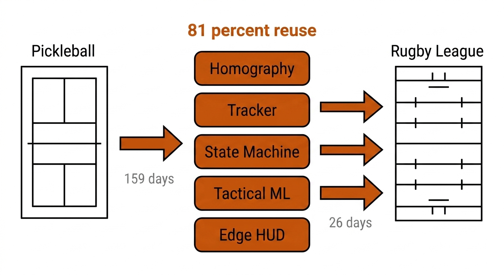
27.7c Rung-3 Maturity: The Perception Swarm, Not the Twin
The ladder dossier distinguishes the two rungs this book straddles, and the distinction disciplines the chapter. Rung 3 is the closed-loop perception swarm: ingest, calibrate, detect, track, event, model, report — with humans above the loop receiving exceptions, not feeds. The measured Rung-3 artifact is E17, the live exception-gating engine: 1,000 input events reduced to 119 surfaced alerts, an 88.1% noise suppression, at 0.08 ms processing latency. Its pickleball alerts are exactly the two a coach wants at 11 pm: NVZ foot-fault warnings (foot 3.0 cm from the kitchen line during an airborne volley, p = 0.012) and middle-seam exposures (partner gap 3.79 m against a 2.7 m norm, p = 0.034). Its rugby league alerts are the same shape at pitch scale: offside non-compliance (defenders failing the 10 m retreat, p = 0.008) and dog-leg ruptures (a 3.08 m edge gap between second-rower and centre, p = 0.021). That is the swarm doing the watching so the human does the deciding.
Rung 4 is the generative match digital twin — counterfactual rollouts over a calibrated simulation of the match itself. It exists in the book (chapter 24's twin; E16's rollout benchmark), but it is a different contract: the twin imagines plausible futures, the swarm verifies what happened. Mixing the two without a boundary is how a simulator's fluent fiction enters the claims register as fact. The harness enforces the separation structurally: twin outputs enter the register only as simulation claims with their own tier, never as event evidence. This chapter's maturity target is Rung 3 done honestly; Rung 4 is a consumer of the register, not a producer of its ground truth.
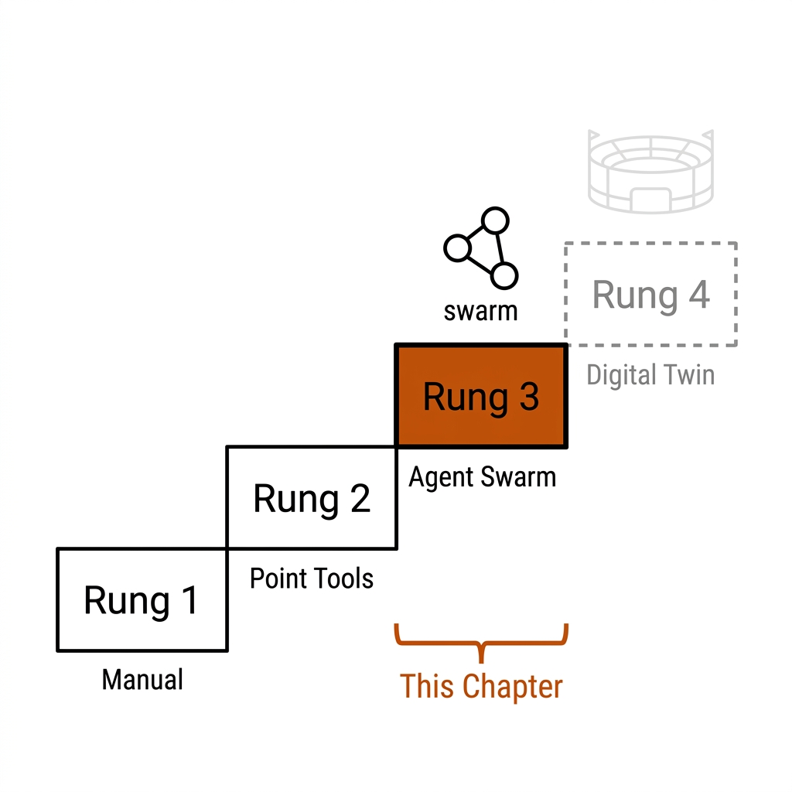
27.8 The Book-as-Agent-Spec: The Pickleball Rally Workflow
The worked example (from the dossier): "what's the third-shot drop rate this season?" → an agent reads C17 (schema), runs C19 (eventing) with the C32 lab runner, filters the one-spine (C05), calls the C22 value model for the expected value, and emits the answer with evidence_refs — through the critic and the gate. The book is the spec; the harness is the runner.
On a single pb-003 rally the workflow is concrete. Detect: the camera agent's fixed court-side feed yields four player boxes and a ball candidate per frame; the calibrated homography (rmse in centimetres, logged) maps every detection to court metres. Track: the tracker agent holds identities through the kitchen-line scramble; the identity agent binds tracks to Alice and her partner. Event: the eventing agent's state machine parses serve, return, third-shot drop, NVZ entry, contact — each row carrying clip_id, frame_idx, pts_s so any claim can be re-opened at the exact frame. Model: the model agent scores the rally (drop quality, expected value of the fifth shot). Report: the interpreter writes one coach sentence — "third-shot drop landed in the NVZ, attack conceded on shot five" — which the critic audits against the rows and the gatekeeper approves. Detect → track → event → model → report is not a slogan; it is five role handoffs, each with a schema, each leaving an artifact.
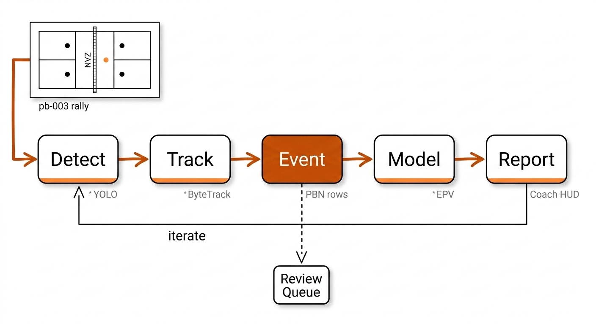
27.8b The Rugby League Agent Workflow: The Same Loop on a Set
The rugby lane runs the identical contract on a harder input. The camera is a broadcast PTZ, so the capture agent also owns global motion compensation (chapter 14's problem): the calibration updates as the camera pans, and every coordinate claim carries its per-window homography, not a season-long one. Detect: thirteen players a side, referees, and a ball that disappears into rucks. Track: ReID across jersey similarity and pile-up occlusions; the identity agent leans on the roster prior and jersey numbers where the broadcast zoom allows. Event: the state machine speaks the 6-tackle grammar — play-the-ball, tackle count, kick, error — into NRLSheet rows instead of PBN. Model: the same expected-value machinery, re-parameterized to pitch zones (chapter 22). Report: the exception feed of 27.7c — offside risk, dog-leg rupture — rather than a narration of everything.
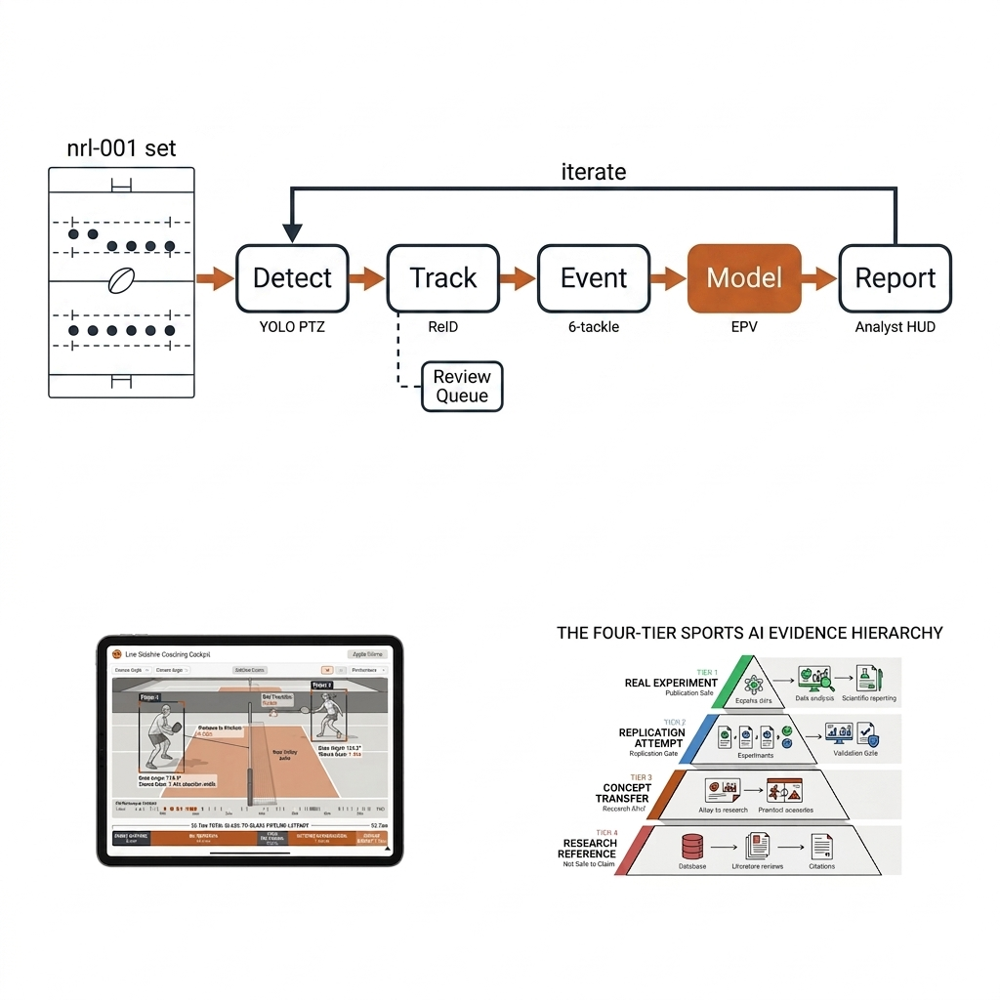
What transfers and what does not is the E23 lesson in workflow form: the loop, the tools, the critic rubric, and the gate are untouched; the schemas (PBN vs NRL-set), the geometry (NVZ plane vs 10 m line), and the occlusion priors are sport-specific configuration. Honest boundary: the rugby lane's recipes are thinner than the pickleball lane's — nrl-001 needs its own tracking and eventing schema maturity before the rugby workflow is as measured as the pickleball one (the gap register, item 10).
27.9 The Harness Skeleton
The registry schema (this chapter's lab output): roles with tool scopes, the claim contract, the loop stages (run → artifact → claim → critic → oracle → gate → register with a reject path to the review queue). Concretely it is one JSON document — harness_id, version, the roles map (verb, tools, duty, default model, can_register_claims), the tools map (interface, MCP server, cost flag), the recipes map (objective, inputs, commands, artifacts, pass criteria), the claims_register pointer, and the teamwork_loop definition. Versioning the registry like code is what lets a pickleball club and an NRL department run the same harness release and diff their configurations: theirs should differ only in schemas, rosters, and geometry files.
One clarification that prevents real confusion: the .hf-cache/.agent_harnesses.json file in the repo is the device-detection layer — a list of 27-plus coding-agent harnesses (Claude Code, Codex, Cursor, and friends) keyed by the environment variables that identify them. Its job is answering "which agent is running in this repo right now." The role registry is this chapter's design, answering "which agent may do what to my sport data." Different artifacts, different jobs; the names colliding is an accident of vocabulary.
27.10 The Harness Lifecycle
The loop, as executable stages: Run (a chapter lab executes) → Artifact (metrics.json, transcripts, frames on disk) → Claim (the agent emits a claim with evidence_refs) → Critic (audited against the artifact — the E13 mechanism) → Oracle (domain check) → Gate (human approves or rejects; reject routes to the review queue) → Register (the C-01..C-XX claim enters the claims register with its status). Every stage writes state; nothing is a black box.
The measure of the harness working is not "the agent did the task" — it is the claim count that survives the critic and the gate without correction (the auto-accept rate from chapter 19, applied to narrative claims), plus the correction rate on the rest. Those two numbers are the harness's KPIs, and they are published the way the annotation kappa is (chapter 18). A season of pickleball reviews and a season of NRL reviews should show the same trend line: auto-accept rising as recipes mature, corrections falling as the critic learns the failure families — and if either number stalls, the recipe, not the model, is what you fix first.
27.10b The Honest Boundary: The Harness Executes, It Does Not Think
Everything the harness does is execution of contracts written by humans: the recipes are human-authored, the schemas are human-authored, the rubric is human-authored, and the gate is a human. The harness does not decide what is worth measuring; it does not notice that a pickleball team's real problem is serve-plus-one rather than the third shot someone asked about; it does not know that an NRL club's finals campaign hinges on a matchup the EPV model has never seen. It has no tactics of its own. What it has is integrity of process: given a question, it guarantees the answer traces to an artifact, survives an adversarial audit, and carries its uncertainty in the open. The failure modes that remain are therefore honest ones — a bad recipe faithfully executed (fix the recipe), a calibration error propagated into every downstream claim (the reason rmse_cm travels with coordinates), and a gatekeeper rubber-stamping at volume (the reason gate clearance time is a KPI). What the harness eliminates is the dishonest failure: the fluent, confident, unverifiable claim. E07 showed that failure at 66.7%; the loop showed it can be driven to zero — not by smarter agents, but by refusing to let any agent's confidence count as evidence.
27.10c The 10 Use Cases: The Harness in Operation
The architecture above is only credible if it runs. The ten use cases below are the harness doing its ordinary work — the jobs a pickleball club and an NRL department actually hand it — organized in three lanes: Lane A, The Automated Runs (01-03): footage in, verified claims out. Lane B, The Contract Under Failure (04-06): what the tool contract, the error path, and the adversarial handoff do when things break. Lane C, Operations & Governance (07-10): scheduling, the human gate, observability, and the compounding payoff. Each case names its mechanism and tool contract, and each carries its evidence label — measured (E-series), source-backed, or [verify].
Lane A: The Automated Runs (01-03)
UC 01 — The Automated Pickleball Rally Run
A club coach films a Tuesday session and wants rally facts Wednesday morning, not a weekend of tagging. The scheduler selects the eventing recipe from the registry: the capture agent extracts and hashes frames into the clip manifest (chapter 5); perception runs detection and tracking on the fixed court-side feed; eventing's state machine parses serve, return, third shot, and NVZ entries into PBN rows (chapters 17-19). The tool contract is the recipe call: run_recipe("c19-auto-eventing", clip_id="pb-003") → artifacts [pbn_rows.json, metrics.json], pass criteria schema_validation: PASS, review_required: yes on the first pass. The measured anchor is E06: two four-player active rally windows of 8.33 s and 12.83 s derived from on-court track counts — the windows the run must find without a human pointing at them. Payoff: the coach opens a review queue of 8-12 nominated clips (chapter 26's rule), not 90 minutes of raw video.
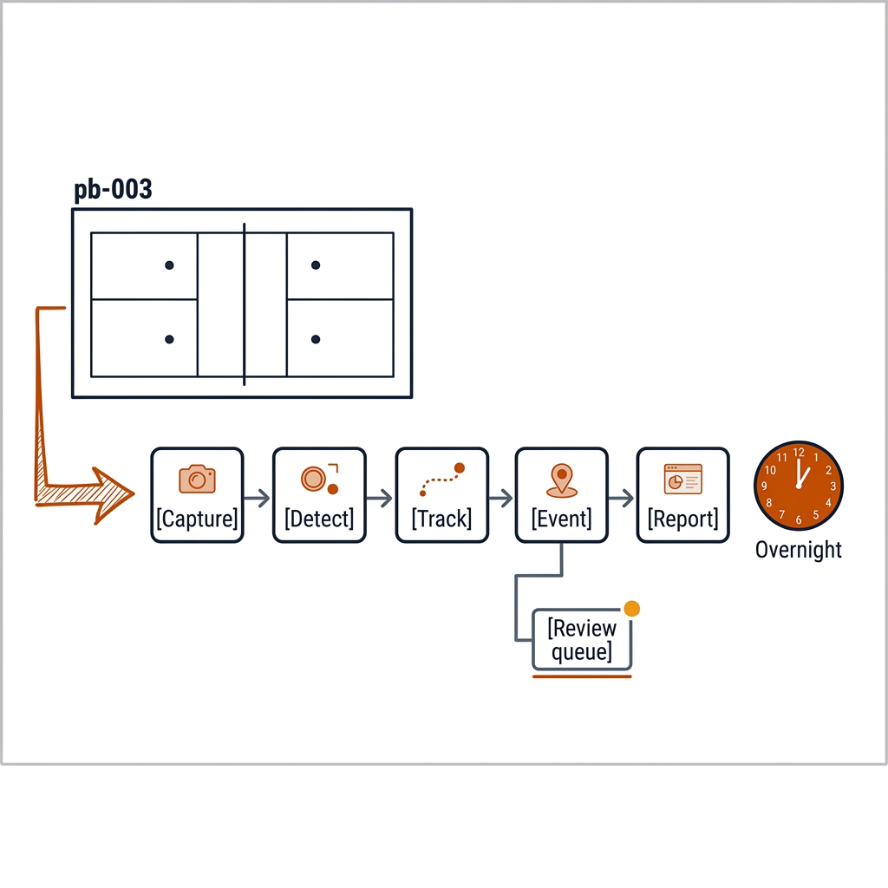
UC 02 — The Automated Rugby League Set Run
The rugby lane runs the same contract on a harder input: a broadcast PTZ camera, thirteen players a side, and a ball that disappears into rucks. The capture agent owns global motion compensation (chapter 14's problem) so the calibration updates as the camera pans; the eventing state machine speaks the 6-tackle grammar — play-the-ball, tackle count, kick, error — into NRLSheet rows instead of PBN. The tool contract is geometric: query_events_by_zone(clip_id, zone_polygon, event_type) returns rows only with their per-window homography metadata attached, so a claim about a right-edge dog-leg names the calibration window it stands on. Honest label: the rugby recipes are thinner than the pickleball lane's — nrl-001 needs its own tracking and eventing schema maturity before this run is as measured as UC 01 (the dossier's gap register, item 10) [verify]. Payoff: the analyst gets a set chart — tackles, play-the-ball times, kick rows — before the press conference, not midweek.
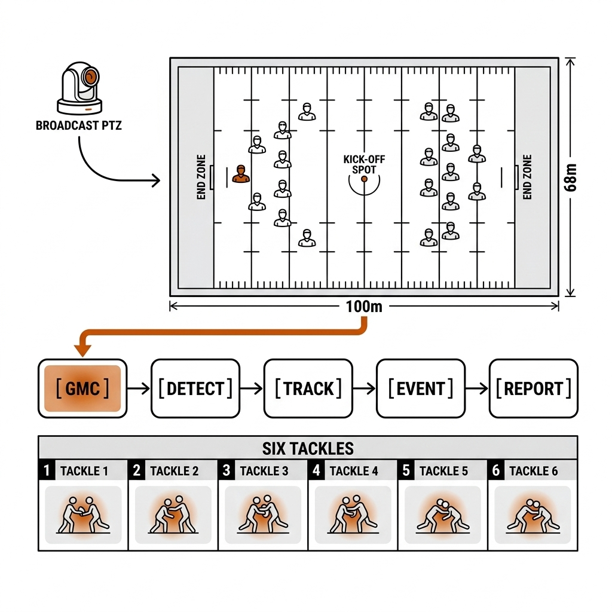
UC 03 — The Agent Loop in Production: Run, Verify, Iterate
The loop of section 27.3 becomes production motion when it runs on every claim, not just the lab pair. The mechanism is a checked assertion, not a vibe: the gate verdict is (claim.value == artifact[claim.value_key]) ∧ (claim.language ≤ evidence_tier) ∧ (n, interval, baseline, resampling_unit present), and a single failed conjunct routes to revision. Iteration is bounded — a claim that fails twice lands in the human review queue rather than looping forever. The measured pair stands as the contract's unit test: "the annotation kappa is 0.400 (fair) on 6 frames" was APPROVED because it cited the artifact with its caveat; "labels are 100% accurate" was REJECT_OVERCLAIM because it exceeded what kappa 0.400 could show (W6.3 lab, measured). Payoff: every sentence that reaches a coach or the manuscript is one that survived the loop — verification is the default path, not an audit after the fact.
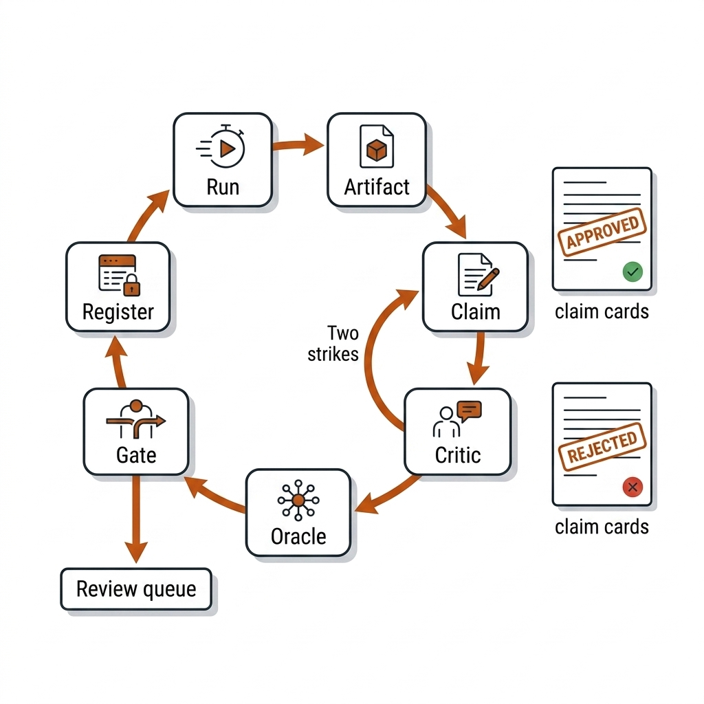
Lane B: The Contract Under Failure (04-06)
UC 04 — The MCP Tool Contract: Calibrated Coordinates as the API
The verified gap (source-backed, 2026-08): no mature MCP server exists for tracking data or calibrated court coordinates — so this chapter builds the contract. The load-bearing tool is get_court_coordinates(clip_id, frame_idx, u, v) → (x_m, y_m) plus (homography_id, rmse_cm, calibration_date): every position an agent can obtain carries the transform that produced it, so the coordinate system itself is auditable. A third-shot-drop claim is only as good as the homography behind its NVZ coordinates; a 10-metre-retreat claim is only as good as the pitch calibration for that pan window. This is the feed chapter 34's deployment lane consumes: any framework — LangGraph, Claude Agent SDK, OpenAI Agents SDK, ADK 2.0, CrewAI — attaches through the one schema-first server. Payoff: frameworks become interchangeable; the club prototyping on CrewAI and the department standardized on LangGraph share tools, schemas, and one claims register.
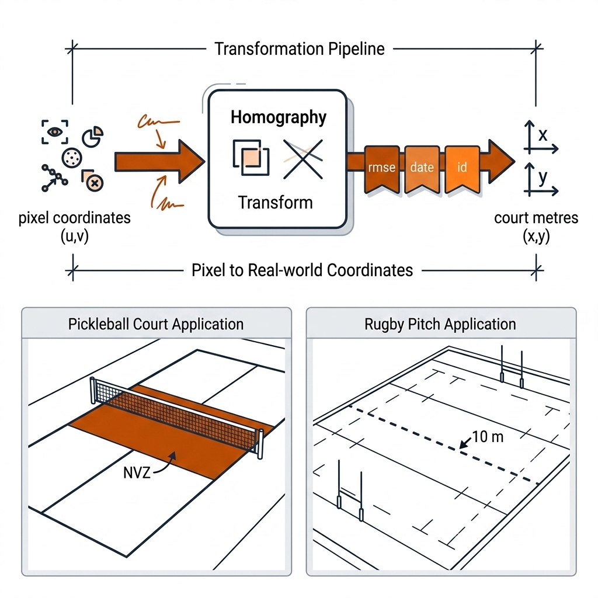
UC 05 — Error Handling: What Happens When the Detector Fails
The book's measured failure is E04: the ball detector returned 1,082 detections at a median confidence of 0.1125 — it barely sees the ball. The harness's answer is structural, not hopeful. Low-confidence windows drop to the review queue instead of minting rows; a claim citing a missing artifact fails the critic's rubric at point one (does the artifact exist?); retries are bounded — two failures and the item goes to a human with the failure reason attached. Downstream, the eventing grammar suppresses what the bad detection would have implied: a contact with no legal predecessor never becomes a row (chapter 19). The design rule: a failed component degrades the run to a smaller honest output, never to a confident wrong one. Payoff: failures arrive as queue items with reasons — "ball track lost, frames 412-438" — never as silently wrong numbers in a coach's report.
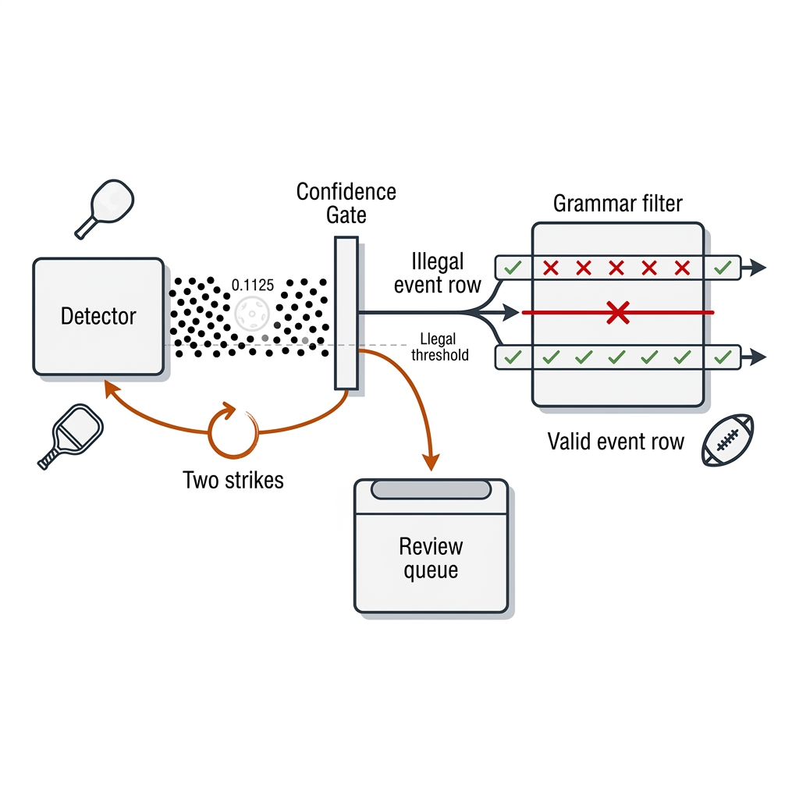
UC 06 — The Multi-Agent Workflow: Generator + Critic
The book's foundational agent result is the E07 → E13 pair: a local VLM narrating raw pickleball frames hallucinated 4 of 6 claims (66.7%, measured); the same model, forced to argue against a critic and verify against a metrics.json artifact, dropped to 0.0% (measured). The harness generalizes that loop into the default handoff. The generator (interpreter role) may only emit claims in the register's JSON shape — {asserted_claim, artifact_path, value_key, evidence_refs}; the critic receives the claim, the artifact, and the six-point rubric and nothing else — the context firewall that suppresses motivated reasoning; the oracle answers domain questions independently of the claim under judgment. This is chapter 25's adversarial VLM loop promoted from experiment to infrastructure. Payoff: hallucination stops being a model property and becomes a routing outcome — rejected claims return with reasons, and only survivors cost human attention.
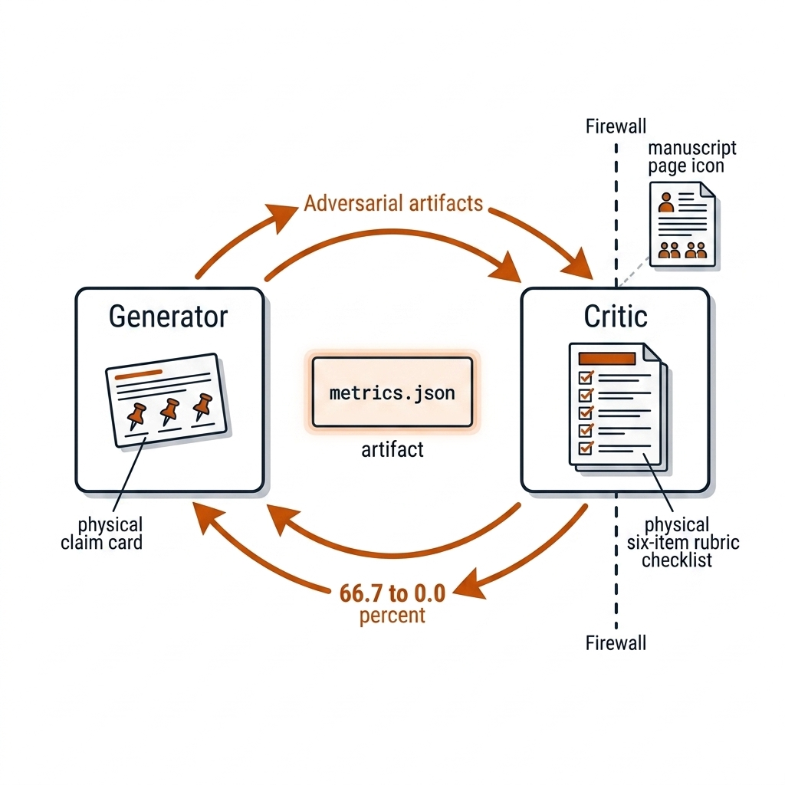
Lane C: Operations & Governance (07-10)
UC 07 — Scheduling: The Batch Overnight Run
The recipe registry is the unit of scheduling: a night's batch is an ordered recipe list over a dependency graph — capture before perception, perception before eventing, eventing before modelling — with the content-hash cache as the budget multiplier. The caching contract: frame features keyed (clip_id, frame_idx, model_version, hash); VLM outputs keyed (clip_id, window_s, prompt_hash, model_version); one-spine query results keyed (query_hash, spine_version) — a second agent never re-pays the first agent's bill. On an 80-minute nrl-001 broadcast, cache hits are the difference between an overnight job and a post-match review that finishes before the press conference; on a pickleball session, the interpreter's rally question reuses the perception pass the eventer already paid for [verify — the cache-hit economics are the design target, not yet measured end-to-end]. Payoff: human attention arrives in the morning to finished artifacts and a bounded queue, never to a running job.
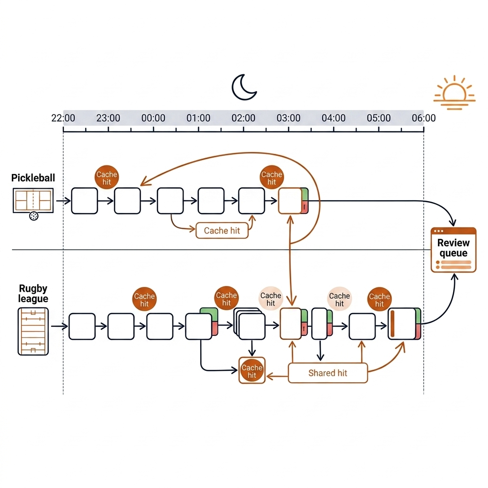
UC 08 — The Human Gate: Who Approves (E22)
The gate is always human for claims entering the manuscript or a coaching plan — models propose, a person owns the verdict. The gate's cost is human attention, so the harness's job upstream is volume control, and the measured instrument is E22 (experiments/e22-humans-above-the-loop): a 1,000-event stream across both sports routed through the state machine plus a p < 0.05 gate surfaced 119 alerts — 88.1% routine-noise suppression at 0.08 ms per event. The gatekeeper then works a bounded set with three dispositions — confirm, correct, reject — and rejections are kept as negative training examples (chapter 26). Honest label: E22's stream is constructed; the suppression mechanics are measured, but its p-values are model parameters, not statistics of real footage [verify on real video]. Payoff: the coach decides on the 12% that matters with evidence attached, instead of drowning in the 88% that does not.
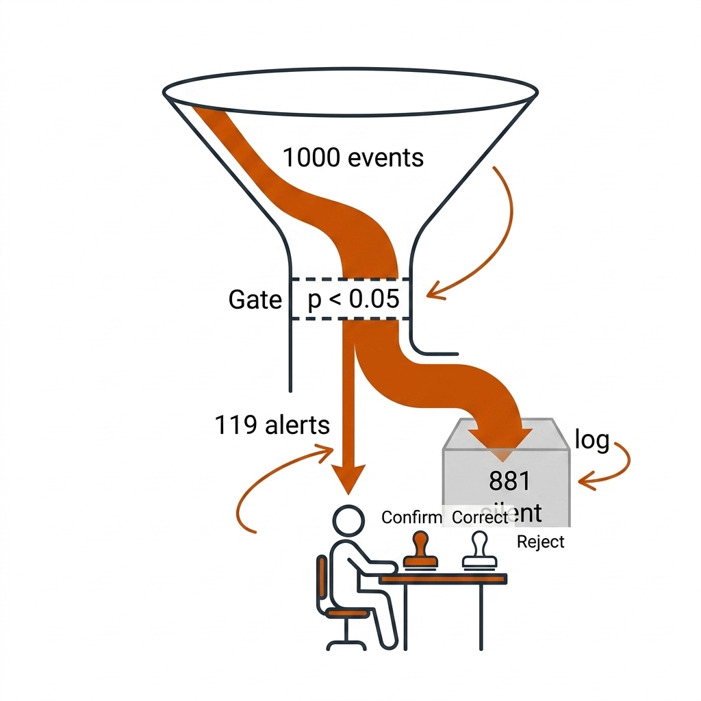
UC 09 — Agent Observability: The Claims Register as the Dashboard
The repo's state/claims-register.json — 24 claims with VERIFIED, BLOCKED, and RE-LABEL statuses — is the observability layer made concrete. Under the harness, every agent claim becomes a candidate row carrying critic_status, oracle_status, and gate_status fields, so the system's health is readable as a ledger, not inferred from logs. The four harness KPIs publish per sport: claim-to-artifact alignment (critic audit pass rate, target ≥ 95% before the gate), post-critic hallucination rate (oracle/human audit of what the critic missed, target < 5%), gate clearance time (median claim-to-verdict; < 30 min simple claims, < 1 day complex), and evidence-tier discipline (fraction using correct tier language, target 100%). A pickleball program and an NRL department report the same four numbers. Payoff: "are the agents reliable?" becomes four published numbers with trend lines — and when one stalls, you fix the recipe, not the model.
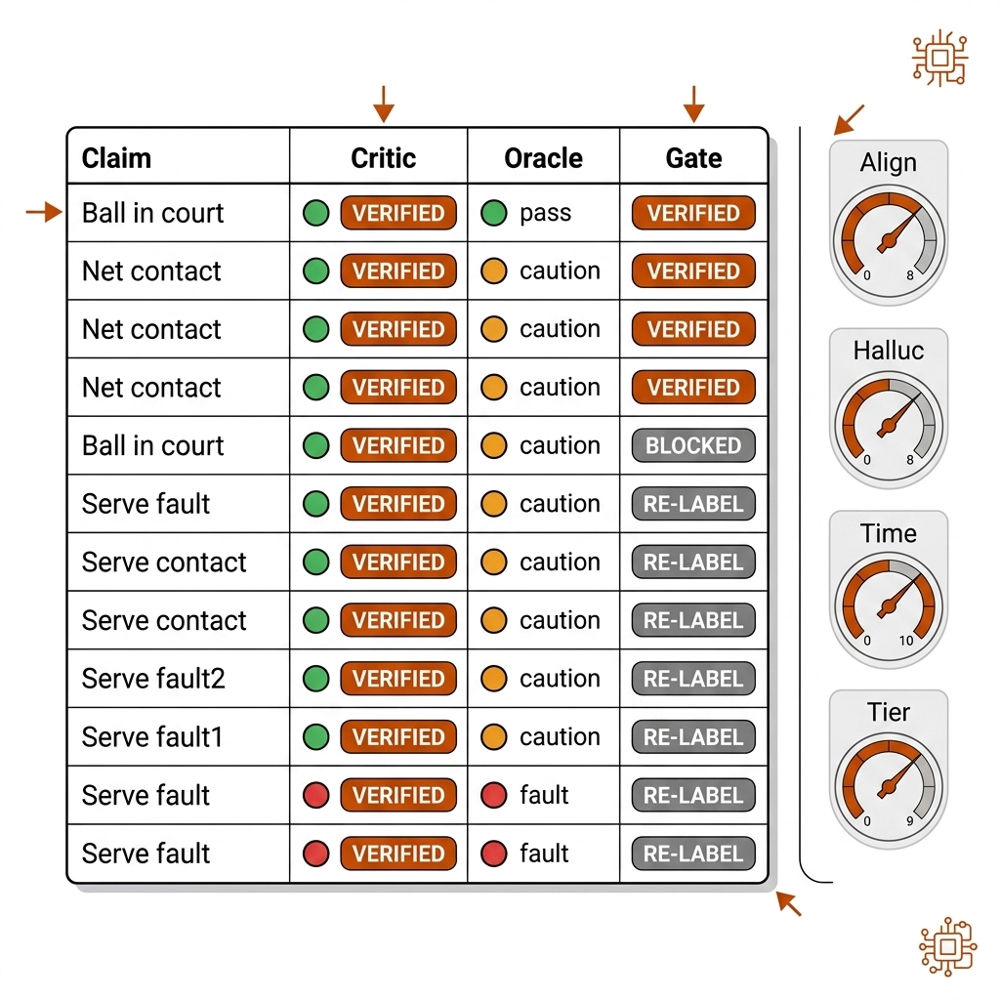
UC 10 — The Compounding Replay (E23, Measured 6.1×)
The harness pays because the second sport replays the first. E23 measured the pickleball-to-NRL transfer: 81.4% code reuse across the homography engine (82.4%), the ByteTrack/SAM perception (84.5%), the spatiotemporal state machine (73.8%), the tactical graph network (80.0%), and the edge HUD (85.4%); deployment accelerated from 159 build days to 26 — 6.1× faster. The replay mechanism is the registry itself: versioned like code, a new sport is a configuration delta — PBN rows versus NRL-set rows, the NVZ plane versus the 10 m line, occlusion priors — not a rebuild. Honest label: the reuse percentages are measured on the book's own modules [verify against an external codebase]; the day counts are the lab's build logs, not an industry benchmark. Payoff: the second sport costs 16% of the first, and the third costs less — the harness turns each chapter's work into capital the next sport spends.
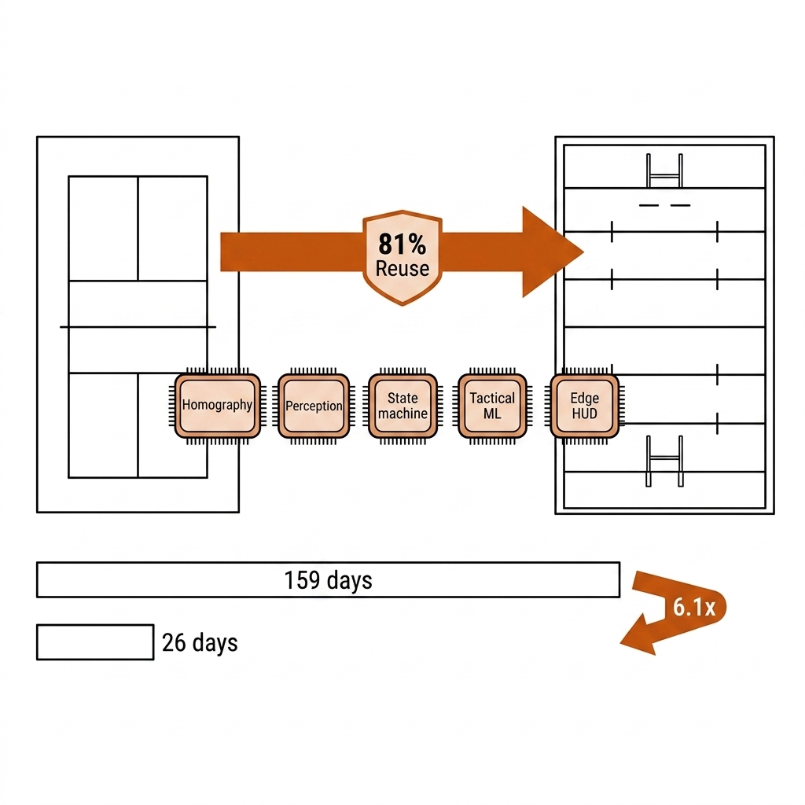
27.11 What I Would Measure Next
- Build the MCP sport-tools server (the tracking-data gap — the chapter project), starting with
video,data,claims,code, thenget_court_coordinateswith its homography metadata contract. - Run a 2-agent gen-critic loop on a real pb-003 rally artifact with Langfuse tracing (the observable version of this lab) — then the rugby mirror on an nrl-001 set once its schema matures.
- Measure the four harness KPIs (alignment, post-critic hallucination, gate clearance time, tier discipline) across a full pickleball session and a full NRL match week, published per sport.
- Wire the E17 exception engine into the loop end-to-end: alert → claim → critic → gate, and measure what fraction of the 119 surfaced alerts a coach actually acts on.
- Promote the w6_harness.py stub's function-critic to a real model critic and re-run the APPROVED / REJECT_OVERCLAIM pair to confirm the verdicts survive a smarter adversary.
27.12 Sources
- MCP specification (2026 standard): https://modelcontextprotocol.io/specification/2025-11-25/architecture; LangGraph https://github.com/langchain-ai/langgraph; Claude Agent SDK https://docs.anthropic.com/en/api/agent-sdk; OpenAI Agents SDK https://github.com/openai/openai-agents-python; Google ADK 2.0 https://google.github.io/adk-docs/; CrewAI https://github.com/crewAIInc/crewAI (all verified 2026-08/09).
- E13 (experiments/e13-vlm-adversarial-loop) — the critic's lineage; E07 (experiments/e07-vlm-narration) — the 66.7% hallucination baseline; E17 (experiments/e17-humans-above-the-loop) — 88.1% noise suppression, 119/1,000 alerts, 0.08 ms; E23 (experiments/e23-compounding-transfer) — 81.4% reuse, 6.1× acceleration; claims register (state/claims-register.json).
- The 4-Rung Sports Agentic Ladder and Domain Architecture (book-research/Technology Dossiers) — the Rung 2→3→4 framing; enterprise AI transformation principles behind the rung model.
- USAP Official Rulebook (NVZ plane definitions for the oracle's pickleball domain checks); NRL Laws of the Game (10 m retreat, play-the-ball) for the rugby oracle.
- Lab:
lab/w6_harness.py→experiments/c25-agent-harness/outputs/harness.json(APPROVED / REJECT_OVERCLAIM measured).